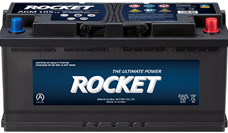

포화도(Y)·20시간 용량(Z) 숫자를 표로만 보여주던 방식 대신, 반투명한 배터리 그림이 실제 %만큼 선명하게 채워지는 형태로 바꾼 개념안입니다. 처음 화면을 보는 사람도 3초 안에 "지금 상태가 좋은지 나쁜지" 알 수 있도록, 핵심 숫자는 5초마다 한 번씩 살짝 커지며 빛나는 강조를 반복합니다.

--battery-case-top)으로 잡아 100%여도 케이스 라인을 넘어가지 않음.prefers-reduced-motion 설정 시 애니메이션 없이 바로 최종값 표시).prefers-reduced-motion 설정 시 자동으로 꺼짐).